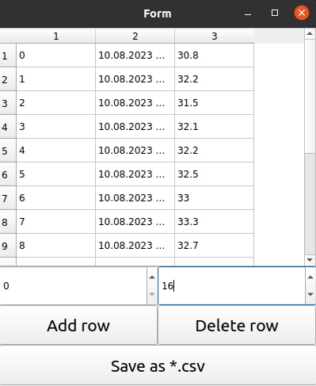

Qt5 temperature controller.

Alt text
The application communicates with the Arduino board through the serial port to read the temperature and write the state of the executable objects.
Features
The read data can be visualized in the form of:

Alt text
- color chart, Alt text
- table
The read data can be saved as:
- .png
- .csv
The read data can be accessed from the standard fortune server client.
Alt text
Requirements
- CMake
- Qt5 with: Charts, Sql, SerialPort, Concurrent, Network
- Arduino IDE
Setup
The PC running the application connects via USB cable to an already programmed Arduino board with a temperature sensor (BMP180) to start working.